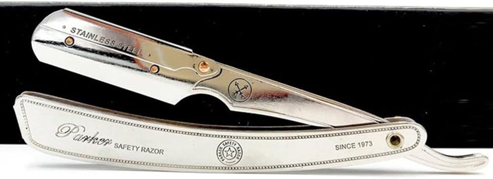

Escolha por categoria
Navalhas e lâminas
Ferramentas para quem quer mais controlo no barbear clássico e quer perceber onde vale a pena começar sem estragar a experiência. Começa pelas escolhas mais fortes e usa os guias da revista para resolver a dúvida que ainda faltar.
Navalha Profissional ASIPRO
Indicada para quem quer passar das lâminas descartáveis para uma navalha clássica com mais controlo em perfilados e linhas.
Ver produto
King C. Gillette Máquina Dupla
Indicada para quem quer sair das lâminas descartáveis e ganhar mais controlo no barbear.
Ver produtoPrimeiro, acerta no formato
Os guias desta categoria ajudam a perceber a diferença entre navalha clássica, máquina de segurança e escolha de lâmina, para começares com menos fricção.
Melhores opções
Entradas sólidas para barbear clássico
Nesta categoria interessa distinguir ferramenta, curva de aprendizagem e custo de reposição. Tudo o resto vem depois.
King C. Gillette Máquina Dupla
Construção em metal sólido com boa estabilidade na mão



Como escolher
Como entrar no barbear clássico sem romantizar demais
Barbear clássico pode compensar, mas não serve toda a gente da mesma forma. Convém perceber o nível de controlo e prática que cada formato pede.
- Se queres uma entrada mais segura, a máquina de segurança costuma ser o passo mais previsível.
- Se o objetivo é perfilado e detalhe, a navalha pede mais mão, mas dá outro controlo.
- Nas lâminas, conforto e agressividade sentem-se na pele; não convém escolher só pelo preço por unidade.
Atalho de escolha
Escolhe pelo grau de controlo
Há uma opção para começar, outra para barbear clássico diário e outra para reposição.
Entrada mais fácilVer detalhe
Navalha Profissional ASIPRO
Indicada para quem quer passar das lâminas descartáveis para uma navalha clássica com mais controlo em perfilados e linhas.
Mais sólida para clássicoVer detalhe
King C. Gillette Máquina Dupla
Indicada para quem quer sair das lâminas descartáveis e ganhar mais controlo no barbear.
Reposição para não falharVer detalhe
Derby Premium 100 Lâminas
Indicadas para quem usa máquina de segurança ou navalha clássica e quer stock de reposição sem surpresas.
Revista OndeCortar
Ver revistaGuias para começar no barbear clássico com menos erro
Aqui encontras diferenças reais entre formatos e critérios para escolher lâminas sem transformar o barbear numa lotaria.
Perguntas frequentes
Navalha clássica e máquina de segurança dão a mesma experiência?
Não. A máquina de segurança costuma ser mais controlável para quem está a começar; a navalha dá mais liberdade de linha, mas pede mais técnica.
As lâminas mudam mesmo o conforto?
Mudam bastante. Em pele sensível ou barbear frequente, a lâmina certa nota-se mais do que muitos ajustamentos cosméticos.
Fechar decisão
No barbear clássico, a técnica começa na escolha
Se acertares no formato e na lâmina, a experiência melhora logo. Se falhares aí, o resto complica-se.
Transparência: Alguns links da loja são afiliados. Se comprares através deles, o OndeCortar pode receber uma comissão por compras elegíveis.